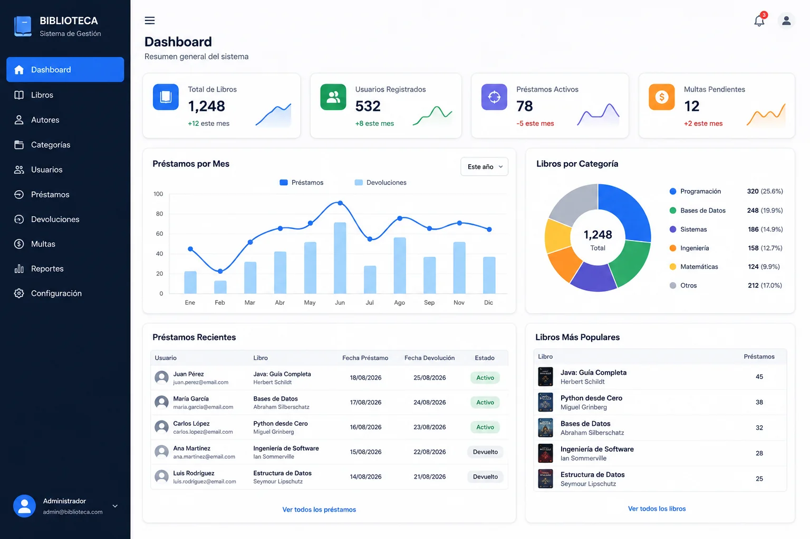
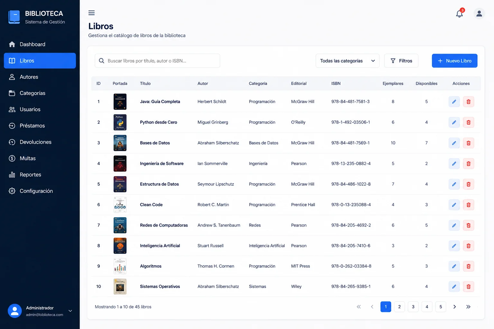
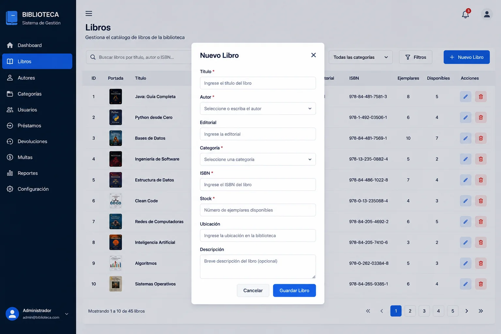

SOFTWARE · DESKTOP
Gestión de Biblioteca
Una aplicación de escritorio para registrar, consultar y actualizar información de libros mediante Java Swing y una base de datos MySQL.
Hablar de un proyecto
01 / Problema
Qué había que resolver
El proyecto se enfocó en convertir operaciones CRUD en un flujo claro para el usuario: visualizar información, registrar nuevos datos, buscar registros y realizar modificaciones desde una interfaz de escritorio.
02 / Decisiones
Cómo lo planteé
Las decisiones de implementación se enfocaron en mantener el proyecto comprensible y funcional dentro de su alcance.
- 01Separar las acciones principales en pantallas y formularios fáciles de reconocer.
- 02Usar MySQL como persistencia para mantener los registros fuera de la sesión de la aplicación.
- 03Aplicar programación orientada a objetos para organizar la lógica de la aplicación.
03 / Interfaz
El proyecto en uso.
Capturas directas del proyecto para mostrar la interfaz y el flujo sin marcos decorativos.


04 / Aprendizaje
Qué me dejó el proyecto
El proyecto permitió conectar interfaz, lógica y persistencia de datos en un mismo sistema. También mostró la importancia de diseñar validaciones antes de permitir cambios en los registros.